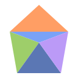
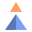

Kinect Web GameOpen, allow the camera, play. The top-right menu saves a playlist and 1P/2P. Hold a hand over the corner Play mark, or click Play. A longer curtain, a big title, then about 18 seconds. When a camera body is live, the camera is the only player. Pointer and keyboard still play if the camera is off.
Score 0
Game 1 of 4
Allow the camera, then hold Play or press Play.

First visitAllow the camera to track your hands on-device. Nothing is uploaded. Pointer and keyboard still play if you skip or the camera is blocked.